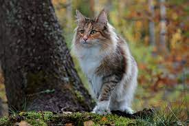

Noorse boskat

De Noorse Boskat is een imposant kattenras afkomstig uit Noorwegen. Ze zijn bekend om hun grote gestalte, krachtige bouw
en lange, pluizige vacht die hen beschermt tegen koude temperaturen. Deze katten hebben een opvallende driehoekige kop
met amandelvormige ogen en hoog geplaatste, getufte oren. Hun dikke kraag rond de nek en lange, pluizige staart geven
hen een majestueuze uitstraling. De Noorse Boskat staat bekend om hun vriendelijke en sociale persoonlijkheid, waardoor
ze uitstekende metgezellen zijn voor gezinnen. Ze zijn speels en intelligent, en ze genieten van interactie met mensen.
Al met al is de Noorse Boskat een prachtig en charmant kattenras met een indrukwekkende verschijning en een
aanhankelijke aard.
bestellen
€299,99
Plus- en minpunten
✓voordeel X nadelen